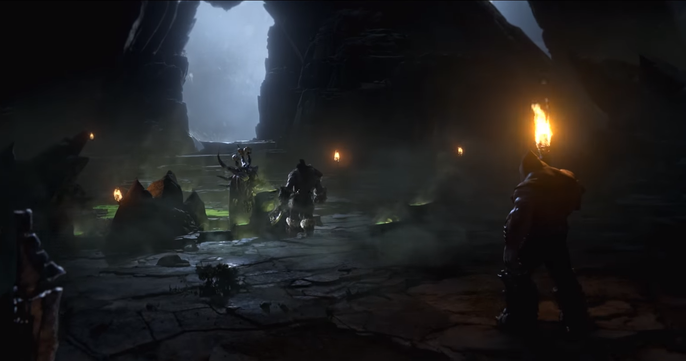
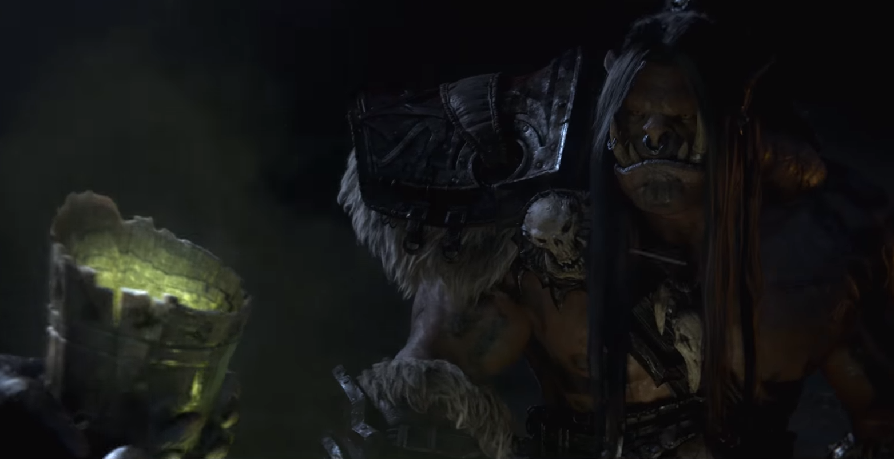
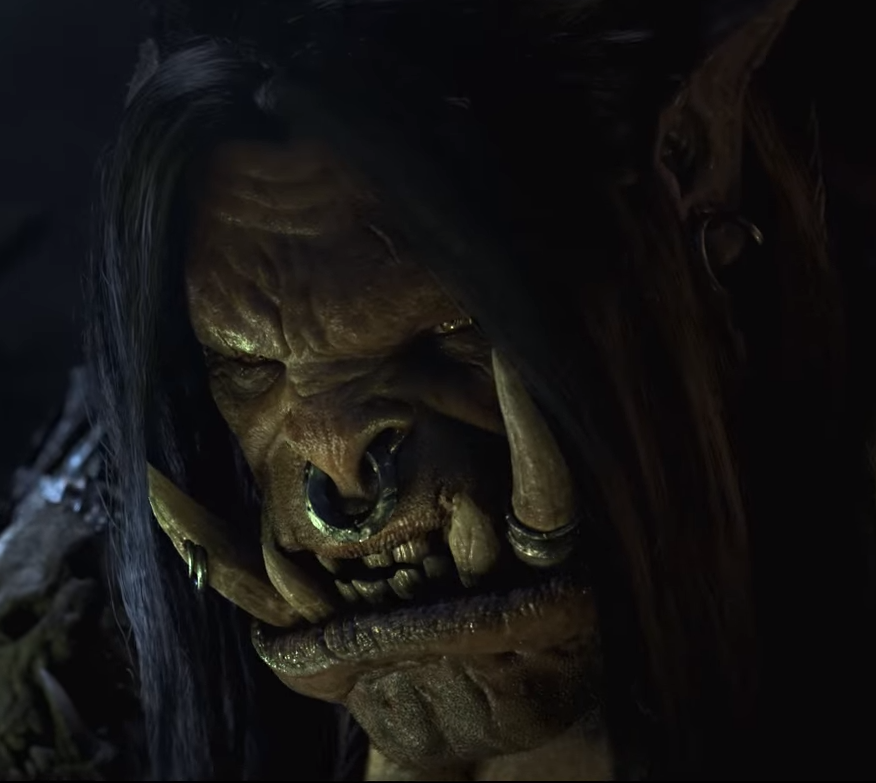
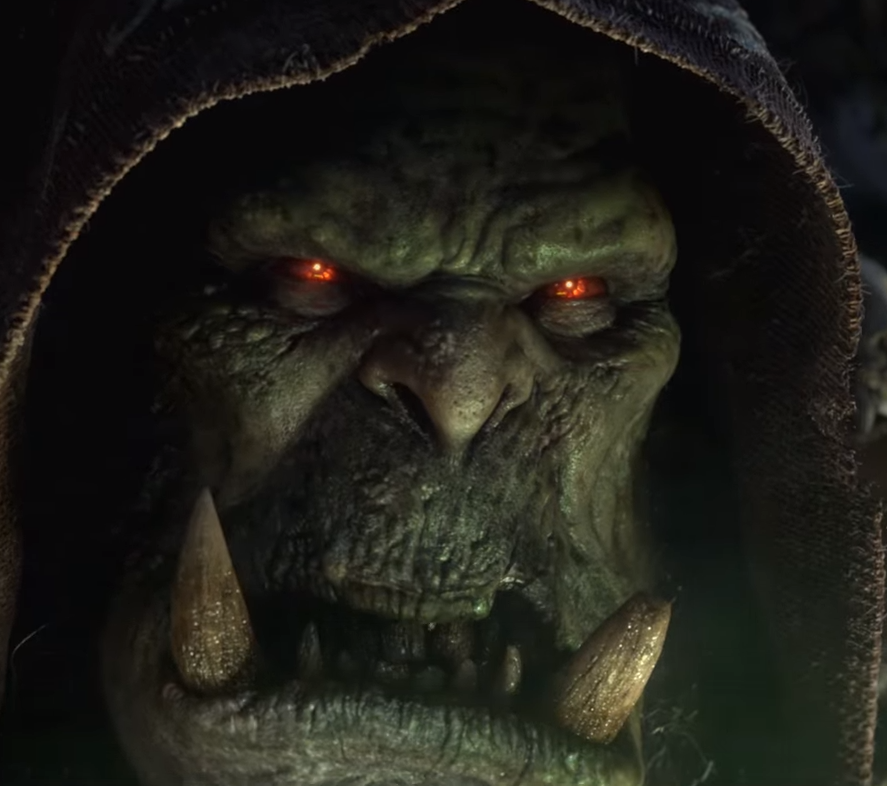
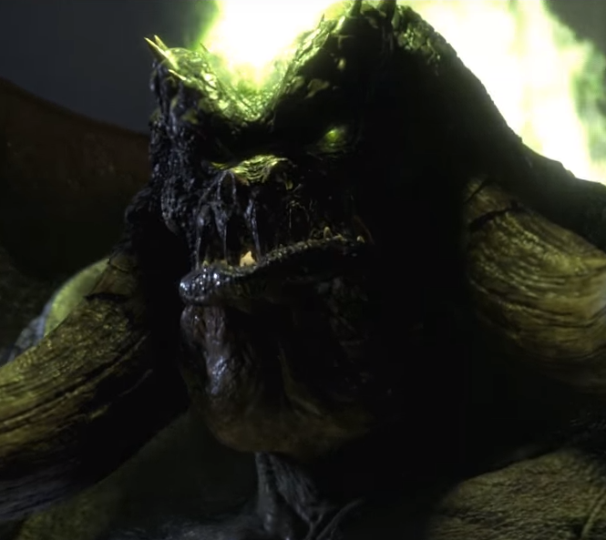
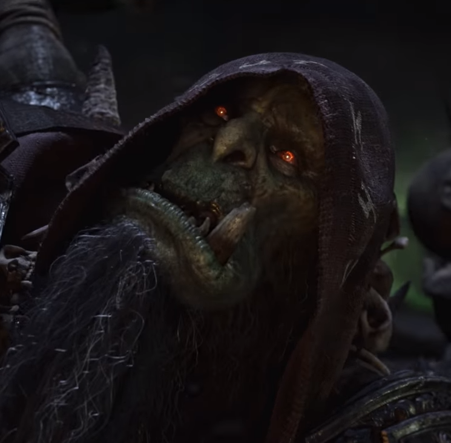
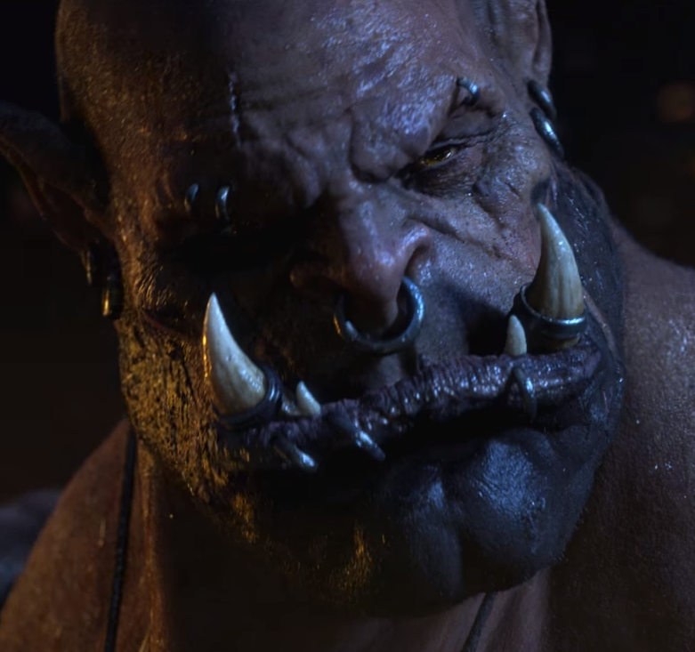
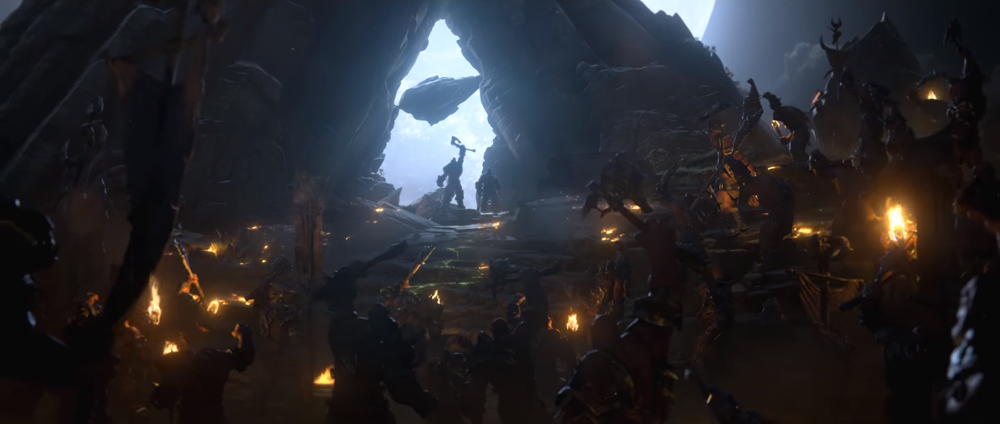

Дренор
Тёмный портал
35 лет назад...

Чернокнижник Гул'Дан протягивает костяной кубок подошедшему Громмашу Адскому Крику.
- Пей, Адский Крик. Прими свою судьбу...

Громмаш выхватывает сосуд из рук Гул'Дана, принюхивается и чувствует отвратительный запах.
- Вы будете завоевателями...

- И что, Гул'Дан, мы отдадим взамен?

- Всё что есть...
Громмаш выливает кровь домена на землю, ГулДан с ужасом сотрит ему за спину и сзади Адского Крика появляется Маннорот.

- Ты отвергаешь мой дар? А все эти жалкие... шавки... пришли увидеть твою смерть?
Громмаш стоит недвигаясь и смотрит прямо демону в глаза. Из темноты начинают лететь снаряды катапульт.
Гул'Дан падает от взрыва, Маннорот начинает стрелять снарядами скверны из своего копья в ответ.
Мощный взрыв поднимает облако пыли и Маннорот вглядывается в него, как вдруг из него вылетает Громмаш и всаживает свой топор аккурат промеж глаз демона.
Его смерть вызывает мощный взрыв и Громмаш стоит прямо перед ним, готовый умереть, но его спасает орк в плаще, прыгая на него сбоку и падая с ним в овраг.
Кровь демона стакает по ступеням... Орк подходит к Гул'Дану и приподнимает его за плечо, смотря ему в лицо.

- Это не наша судьба...
Орк снимает плащ и показывает своё лицо. Им оказывается Гаррош Адский Крик.

- Времена меняются...
Гаррош кидает Гул'Дана обратно на землю, подходит к топору Громмаша, вытаскивает его из черепа Маннорота и кидает владельцу.
Громмаш осматривает топор, возносит его над головой и кричит:

- Мы не будем рабами!
- Но мы будем завоевателями...